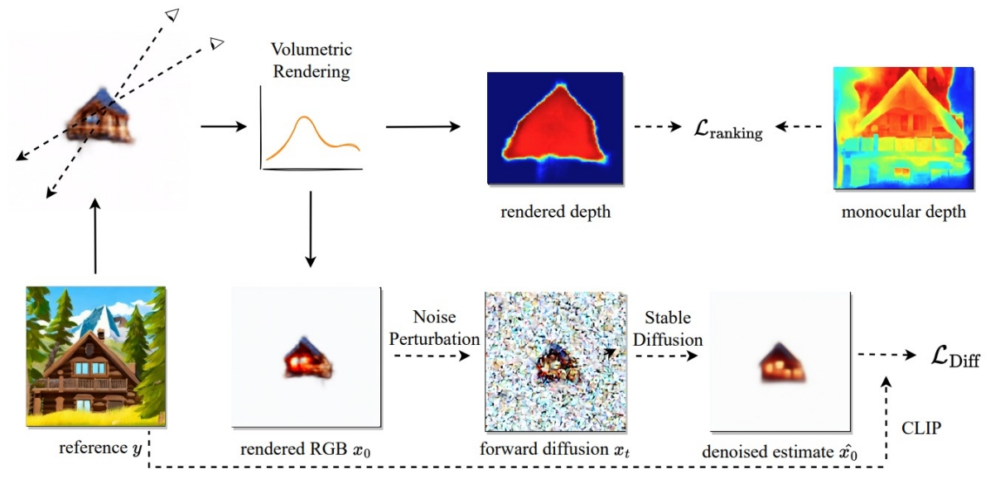
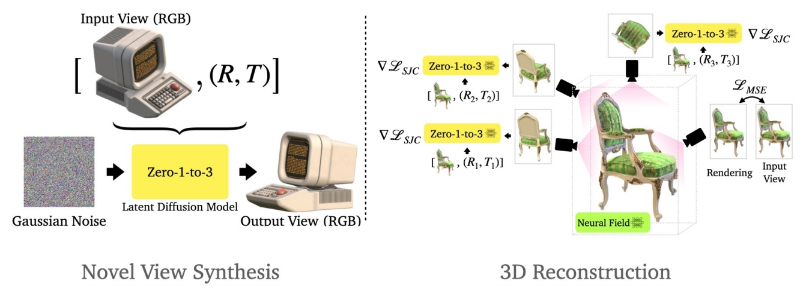

P42
Outline
- 3D reconstruction
P43
NeuralLift-360 for 3D reconstruction
- SDS + Fine-tuned CLIP text embedding + Depth supervision

Xu et al., "NeuralLift-360: Lifting An In-the-wild 2D Photo to A 3D Object with 360° Views", CVPR 2023
✅ 整体上是类似 SDS 的优化方法，再结合其它的损失函数。
✅ (1) 渲染不同视角，并对渲染结果用 clip score打分。
✅ (2) 监督深度信息。
P44
Zero 1-to-3
- Generate novel view from 1 view and pose, with 2d model.
- Then, run SJC / SDS-like optimizations with view-conditioned model.

Liu et al., "Zero-1-to-3: Zero-shot One Image to 3D Object", arXiv 2023
✅ (1) 用 2D diffusion 生成多视角。用 SDS 对多视角图像生成3D．
本文出自CaterpillarStudyGroup，转载请注明出处。
https://caterpillarstudygroup.github.io/ImportantArticles/